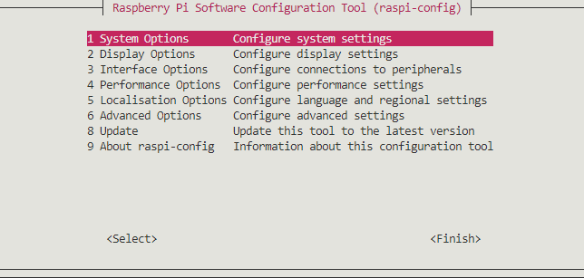

Setup
Environment
- Raspberry Pi Zero
- Raspberry Pi Camera V2
- Raspberry Pi OS Lite
Setup of the OS
Raspberry Pi Imager enables brief preparation for booting Raspberry Pi OS.
Steps for writing an OS image to micro SD
- Install Raspberry Pi Imager.
- Open Raspberry Pi Imager.
- Select Raspberry Pi OS Lite (32bit) as OS.
- Select a SD card the OS is written in.
- Click WRITE.

Essential system setttings in raspi-config
Users can configure some essential settings using raspi-config. raspi-config can be executed by the command (note that it should be executed as the root user):
sudo raspi-config
raspi-config enables users to configure settings interactively, showing the interface like below:

Users of obcam should configure:
- WiFi setting for network connection.
- Enabling legacy camera support.
Rebooting after configuration.
Most configuration in the raspi-config requires rebooting. Thus, you should reboot the system before executing the flight camera application.
WiFi setting
In the raspi-config interface,
- Select System Options.
- Select Wireless LAN.
- Select your country (e.g. JP Japan).
- Enter SSID.
- Enter passphrase.
Tethering
Tethering by your smart phone is a good choice for WiFi access point and router. If you want to use tethering, you enter its SSID and passphrase while the setting above.
Enabling legacy camera support
In the raspi-config interface,
- Select Interface Options.
- Select Legacy Camera.
- Select Yes.
- Select OK.
Legacy camera support
The latest version of Raspberry Pi OS supports new camera interface using libcamera, so it deprecates using legacy camera support. But picamera, which is a Python module for using Raspberry Pi Camera and used in obcam, is implemented using the legacy camera interface. Therefore, you should enable it.
Brief setup for the flight camera mode
Using this method, you can install obcam and activate the flight camera mode simultaneously. The brief setup gets under way using the script install.sh in the repository. If you want to know the steps of activation of the flight camera mode, see the section
First you should download the repository using git clone (which requires network connection):
git clone https://github.com/FROM-THE-EARTH/obcam.git
And then, you can execute the brief setup like below:
cd obcam
sudo ./install.sh
That's all setup of the flight camera mode of obcam. You can reboot the Raspberry Pi and run the flight camera program.
Installation of git
If git is not installed in the system, you can run the commands below and install git:
sudo apt update
sudo apt install git
Install only obcam module
obcam can be installed using pip.
pip install git+https://github.com/FROM-THE-EARTH/obcam.git
After the installation, you can use the obcam command to start the flight camera application.
If pip is not installed in the system
Right after the first booting of Raspberry Pi, pip might be not installed yet. In the situation, you can install pip following the procedures below:
- Download the script to install
pip. After the command below is executed, the scriptget-pip.pyis to be downloaded in the current directory.wget https://bootstrap.pypa.io/get-pip.py - Execute the script
get-pip.py.python get-pip.py
Activate the flight camera mode
About the flight camera mode
In the flight camera mode, the application of the flight camera automatically starts when booting a Raspberry Pi. To activate the flight camera mode, the procedures below is required:
- Network and camera settings.
- Install
obcam. - Writing a gileum file for the flight camera.
- Activate the flight camera mode.
Writing a gileum file
Gileum files are kinds of setting files of the application. You should write a gileum file glm.py before activation of the flight camera mode. The gileum file glm.py is in the repository, so you can overwrite the file after downloding the repository. Details of the setting parameters are written in the page. But please note that the settings are already done in the glm.py when downloading the repository, so you doesn't have to change the settings if there are no certain reasons.
Just activate the flight camera mode
Using the script scripts/activate_flightcam.sh, you can activate the flight camera mode. The scripts/activate_flihgtcam.sh is also in the repository.
sudo ./scripts/activate_flightcam.sh
Details of the activation
In this section, details of the activate process is described. The process is not complicated so much. The point is to update the /etc/rc.local file in the system. The file /etc/rc.local is a shell script to be executed at booting.
The script scripts/activate_flightcam.sh inserts the line to /etc/rc.local, in order to execute the obcam program like that:
# /etc/rc.local
# Some lines ...
/usr/bin/python -m obcam /usr/local/src/obcam/glm.py
exit 0
As you can see, the obcam program is executed giving the gileum file /usr/local/src/obcam/glm.py, which is copied when executing scripts/activate_flightcam.sh. Therefore, there is no effects in terms of the flight camera application if you change the content of the glm.py in the downloaded repository, because obcam refers /usr/local/src/obcam/glm.py. If you want apply the change of the glm.py in the downloaded repository, just run scripts/activate_flightcam.sh again, or copy the glm.py to /usr/local/src/obcam/glm.py.